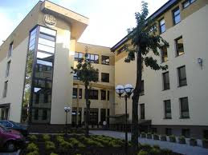

Університет бізнесу в Домброві Гурнічій
Університет бізнесу в Домброві Гурнічій – це приватний вищий навчальний заклад з досвідом навчання студентів та проведення наукових досліджень, а також співпраці з промисловістю та бізнес структурами. В поєднанні з науковими дослідженнями університет навчає студентів, реагуючи на освітні потреби сучасного життя. Працівники ВНЗ постійно розширюють та оновлюють зміст навчальних програм, з особливою увагою на їх міждисциплінарність та інтернаціоналізацію. Університет збільшує різноманітність форм та способів навчання і дає студентам можливість сформувати індивідуальний курс підготовки. Діючи на місцевому, національному та міжнародному рівнях, навчальний заклад забезпечує відмінну якість диплом і всезагальний доступ до знань.
Чому варто навчатися в Університеті бізнесу?
1. Репутація закладу.
Про солідну репутацію університету та якісне навчання свідчать високі місця, які займає заклад в національному рейтингу вищих навчальних закладів та акредитації Державної акредитаційної комісії. Укадемія бізнесу в Домброві Гурнічій, згідно рейтингу таких журналів як „Perspektywy”, „Rzeczpospolita”, „Wprost”, „Polityka” та „Home&Market” є одним з найкращих вищих навчальних закладів Польщі. У 2011 році за рейтингом „Home&Market” університет зайняв друге місце серед приватних закладів Польщі!
2. Студентські гранти.
Університет пропонує студентам навчання денної та заочної форм, яке дофінансовуються Європейським Союзом, а також численні стипендіальні схеми уже з першого семестру навчання. Студенти Університету бізнесу, які мають високі результати навчання і зробили свій внесок у розвиток ініціатив Студентської ради та університету в цілому зможуть отримати гранти. Студенти, які виїжджають в рамках наукових стипендій до зарубіжних партнерських університетів, можуть отримуюти гранти програми Erasmus.
3. Професійні навчально-наукові кадри та бізнес-партнери.
Інтенсивне та якісне навчання в Університеті бізнесу забезпечується знаннями, досвідом і навиками висококваліфікованих науково-педагогічних працівників. Крім того, університет співпрацює з найбільшими загальнопольськими компаніями, спільний керівний орган яких бере активну участь у підготовці навчальних програм та проведенні практичних занять.

4. Сучасна технічна база.
Студенти мають можливість користуватися великими актовими залами, аудіовізуалізованими аудиторіями, сучасними комп'ютерними лабораторіями, лінгафоними кабінетами, бібліотекою та мультимедійним читальним залом, спортивно-рекреаційним комплексом (у тому числі тренажерним та фітнес залами), а також студентським клубом. Розклади занять, заліків та іспитів, всі оголошення для студентів можна знайти у віртуальному деканаті, який доступний на сайті вищого навчального закладу, а також в інтернет-кіосках, розташованих у головному холі.
5. Сучасні методи навчання.
У навчальному процесі застосовуються активні форми навчання: моделювання практичних ситуацій, різного роду симуляції та дискусії, інноваційні засоби підтримки та супроводу навчального процесу, а також сучасні програмні засоби. Використовувані в університеті методи активної участі студентів у заняттях, створюють у них відчуття співучасті у проведенні заняття.
6. Забезпечення роботою студентів та випускників.
Усі випускники та студенти Університету бізнесу, які прагнуть працевлаштуватися чи знайти місце для стажування, а також шукають вичерпну інформацію про ринок праці, можуть отримати професійну допомогу в Бюро кар’єри, яке внесено до реєстру служби зайнятості як посередницька агенція з працевлаштування та надання консультацій під номером 1088/1a. Кожен студент університету може домовитися про консультативну зустріч, в ході якої співробітники Бюро кар’єри допоможуть йому, зокрема: визначи свої професійні навички, написати резюме та подання, підготувати студента до проходження співбесіди, вкажуть, де шукати пропозиції роботи чи практики.
7. Інтенсивне вивчення іноземних мов.
Університет бізнесу в Домброві Гурнічій приділяє особливу увагу інтенсифікації вивчення іноземних мов. Це завдання реалізується Студією іноземних мов, шляхом адаптації освітніх програм до відповідних напрямків навчання.
8. Міжнародний вищий навчальний заклад.
Університет бізнесу бере участь в багатьох міжнародних програмах, зокрема:
- Erasmus
Обмін студентів – в рамках міжнародного обміну 200 студентів зреалізували семестр навчання та практики в одному із 100 зарубіжних партнерських навчальних закладів, що співпрацюють з Університетом бізнесу. - Erasmus Mundus
„Web-based Information Service for Higher Education” – проект, в рамках якого розроблена Соціальна платформа, що об’єднує навчальні заклади з усього світу.
„Joint studies with double diploma” – випускники, які беруть участь в проекті, отримують два дипломи – один з Університету бізнесу, другий – з партнерського вищого навчального закладу. Студенти реалізують семестр навчання в партнерському зарубіжному закладі, в рамках якого застосовують отримані знання на практиці. - Tempus IV
„Impoving the Practical Aspects in the Engineering Programs to meet the Market needs – IPEM” – метою проекту є аналіз практичного використання комп’ютерних програмних засобів, проект спрямований на поєднання теорії та практики. - Leonardo da Vinci
„Практичні аспекти міжнародної торгівлі – професійна кар’єра” – в рамках проекту випускники Університету бізнесу проходять 3 місячне стажування в одній з партнерських організацій в Італії, Угорщині та Великобританії.
„Методи практичного управління міжнародним логістичним підприємством” – чотиримісячне стажування, яке дає можливість випускникам здобути досвід в галузі управління логістичним підприємством. Випускники університету проходять 4-місячне стажування в фірмі Access Networks у Великобританії.
„Випускники Університиету бізнесу в Домброві Гурнічій на європейському ринку праці”- в рамках програми студентів включають в міжнародні проектні групи, організовані зарубіжними партнерськими організаціями. - Стипендіальний фонд
Мобільність студентів – студенти Університету бізнесу реалізують семестр навчання в партнерських навчальних закладах, а також практики в партнерських установах в Ліхтенштейні, Норвегії та Ісландії.
Мобільність науково-педагогічних кадрів – науково-педагогічні працівники університету читають лекції в партнерських навчальних закладах, водночас, викладачі партнерських закладів проводять заняття в Академії.
9. Студентські організації.
Навчання в Академії це також унікальна можливість взяти участь у роботі студентських організацій. Це дає шанс набути перший професійний досвід та розвинути організаторські здібності, проявити себе в груповій роботі. В Академії активно функціонують: Студентська рада, студентські асоціації, Академічний спортивний союз, Товариство студентів та випускників Академії бізнесу в Домброві Гурнічій.
10. Студентські практики.В Університеті бізнесу в Домброві Гурнічій студентські практики та стажування – це невід'ємна частина навчальних планів, інтегральна частина процесу навчання студентів, як денної, так і заочної форм. Під час цих практик студенти мають можливість використовувати набуті теоретичні знання до вирішення практичних задач на успішних підприємствах та установах. При цьому студенти отримують неоціненний практичний досвід. Процедури проходження практик формалізовані у повній відповідності до чинних вимог для вищих навчальних закладів.
Університет в Домброві Гурнічій розпочав свою діяльність в 1995 році. Приватний статус Університету надає можливість швидко реагувати на мінливі запити ринку і пропонувати нові напрямки освіти. На даний момент Університет в Домброві Гурнічій навчає 8 тис. студентів і вже вручила дипломи про закінчення вузу 11 тис. випускникам. Міжнародні експерти, професори, а також студенти з усієї Європи перетворили Університет в Домброві Гурнічій в міжнародний центр співробітництва. Важливими елементами, що впливають на високу оцінку і престиж вузу, є науково-дослідні кадри, їх наукова активність а також сучасна матеріальна база, яка слугує для реалізації навчального процесу і наукових досліджень.
Навчальний процес здійснюється в рамках 13 освітніх напрямків:
- міжнародні відносини,
- адміністрація,
- інформатика,
- логістика,
- управління,
- соціологія,
- економіка,
- міжнародні економічні відносини,
- англійська філологія,
- фізіотерапія і педагогіка.
На кожному напрямку доступний широкий діапазон різноманітних спеціальностей, які дають студентам можливість вірно підібрати програму навчання відповідно до своїх потреб та інтересів.
На даний момент студенти мають можливість варіації із 70 спеціальностей, у тому числі в інженерному напрямку:
- логістика і транспорт,
- інженер якості,
- управління безпекою та гігієна праці,
- комп'ютерні мережі,
- системи баз даних,
- комп'ютерна графіка й мультимедія,
- соціологія медіальної комунікації,
- журналістика.
На спеціальності міжнародні економічні відносини навчання здійснюється виключно англійською мовою.
Сайт:www.wsb.edu.pl
Тип закладу: